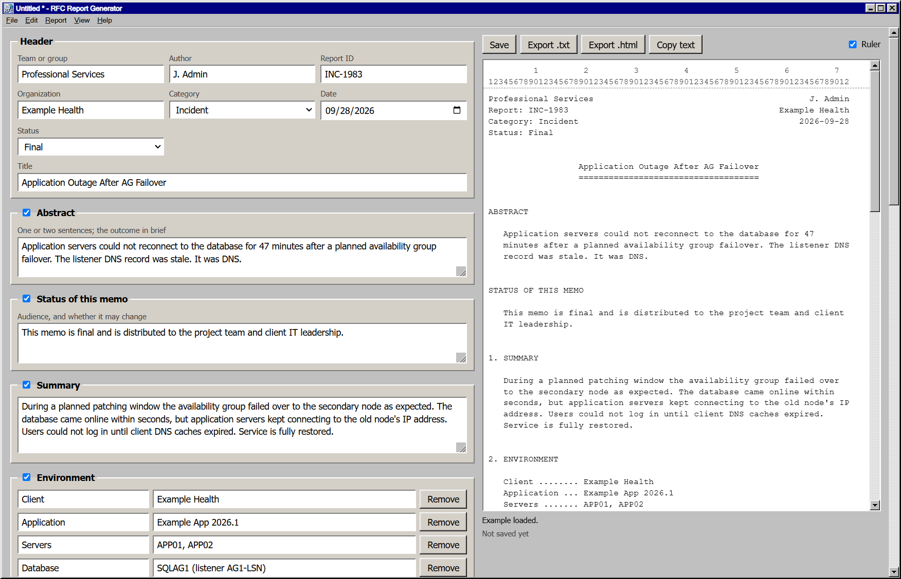

Blame DNS michaelmcg
Report: RFC-0001 rfc.blame-dns.dev
Category: Informational September 2026
Status: Final
RFC Report Generator
====================
ABSTRACT
RFC Report Generator is a free Windows app for writing incident and
change reports as plain text, 72 columns wide, in the style of an
IETF RFC. You fill in a form; it lays out the report as you type. It
was probably DNS.
STATUS OF THIS MEMO
This memo describes version 1.1.0. It is final, and distribution is
unlimited.
1. DOWNLOAD
Installer ........ RFC-Report-Generator-Setup.exe
Portable ......... RFC-Report-Generator-Portable.exe
Older versions ... See [RELEASES] below
The installer adds a Start menu entry and opens .rfcreport files when
you double-click them. The portable version runs from anywhere, with
nothing to install.
The app is not code-signed yet, so Windows SmartScreen may warn on
first run. Choose More info, then Run anyway.
2. WHAT IT LOOKS LIKE

3. FEATURES
- A live preview beside the form, with a column ruler and a warning
for any line over 72 characters.
- Header, abstract, summary, environment, timeline, impact, root
cause, resolution, action items, security considerations,
references and the author's address.
- Untick any section to leave it out. The rest renumber themselves.
- Sections for each category. A Change report starts with an
implementation plan, testing, a rollback plan and approvals. An
Upgrade report adds a table of versions.
- Commands and config are kept exactly as typed, never wrapped.
- Settings that prefill every new report: team, organization, author,
time zone, your own Status choices, and the sections for each
category.
- Spell check, with suggestions on right-click.
- Crash recovery: unsaved changes are kept, and offered back the next
time the app starts.
- The last eight reports at the bottom of the File menu.
- Export as .txt or .html, or copy the text straight into an email or
ticket.
- Reports save as .rfcreport files: plain JSON that diffs cleanly in
Git.
- A Windows 95 look, in light and dark themes.
4. REQUIREMENTS
System .... Windows 10 or 11, 64-bit
Network ... None. Reports stay on your PC.
5. SECURITY CONSIDERATIONS
The app makes no network requests. Its window runs sandboxed under a
strict content security policy, and only a small, checked bridge can
reach your files. Reports go only where you save or export them.
6. REFERENCES
[SOURCE] github.com/michaelmcg/RFC-Report-Generator
[RELEASES] github.com/michaelmcg/RFC-Report-Generator/releases
[LICENSE] MIT License, free to use and change
[RFC7322] RFC 7322, the RFC Style Guide
AUTHOR
michaelmcg
rfc.blame-dns.dev
github.com/michaelmcg
Informational [Page 1]